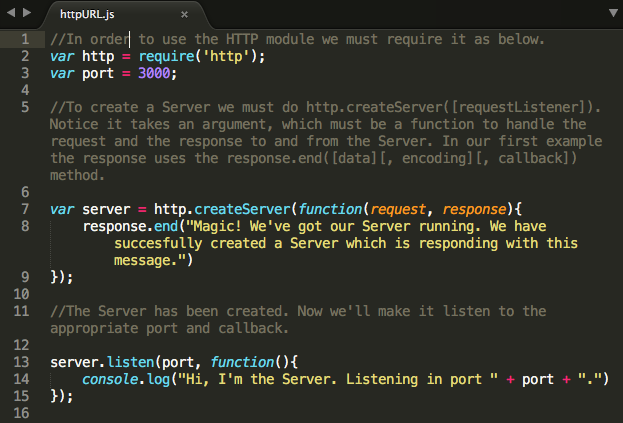

The way the internet works you have Clients and Servers. The Clients make requests to the Servers, the Servers return some reponse and then the Clients knows what to do with that. With the HTTP module we can create servers and clients.
If you go to the Documentation you'll find a list of what the HTTP module is capable of.
To use the HTTP server one must require('http').
To create a Server we must use http.createServer([requestListener]), where [requestListener] is a function which is automatically added to the 'request' event. This function will handle what to do or what happens with both the request and the response with the methods available in the list above.
Now that we have created the Server, we must make it "listen". For that we use the server.listen(handle[, callback]) method. The handle object can be set to either a server, socket or object. This will cause the server to accept connections on the specified handle. This function is asynchronous. callback will be added as a listener for the 'listening' event.
All done, now navigate to the js directory and run node firstServer.js. You should see a message in the terminal. Also open your browser and type http://localhost3000. It Works!!
Let's see the code for that.
Well, we have one server running. But Node.js is much more capable than that. We can have as many servers as we want running at the same time. I have created two other servers. Run node manyServers.js. Super Cool! now we can have several servers doing different thing all of them listening ALL the time.
Most of the time your application wont respond to one request only. When in need of responding to more than one type of request we need to add routes. The URL module makes it possible to read and parse a URL and doSomething with the output.
As with HTTP module the URL module comes with ample documentation. Since this section's purpose is to introduce Node.js modules and because we will shortly use the Express framework to achive the same results, we are not going to spend to much time here. That being said lets use some of the methods availabe to us in URL to set up routes.
First we need to require both require('http') and require('url');
Now remember that all we are doing here is to use the URL which is a String. A URL string is a structured string containing multiple meaningful components. When parsed, a URL object is returned containing properties for each of these components. The url module provides the WHATWG API for working with URLs. Before we continue adding routes, let's pause a second for an important subject. Take a look at the image below for a better understanding of the URL components.
That was a bit lengthy but also priceless. Since requests to servers and data transmition is done via a String a deeper understanding of the url goes a long way.
Ok, back to our task. We can use the URL Legacy method url.parse() and .pathname to parse the url in the request and get the path portion of the url. Once we have that we can implement the logic to tell the server what to do with every type of request to our server. See the code below for more clarity. In your terminal type node URLroutes.js